阿里云容器服务ACK¶
一、配置专有网络¶
1.1进入阿里云VPC控制台¶

1.2开通阿里云VPC服务¶


1.3创建vpc¶


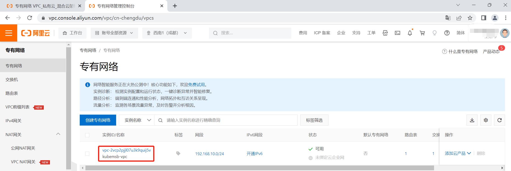
二、配置Kubernetes集群¶
2.1进入阿里云ACK控制台¶


2.2创建集群¶
2.2.1进入集群配置界面¶

2.2.2选择集群配置¶


2.2.3选择节点池配置¶


2.2.4选择组件配置¶

2.2.5确认配置¶

2.2.6创建集群¶


三、阿里云控制台测试集群可用性¶
3.1创建Deployment¶
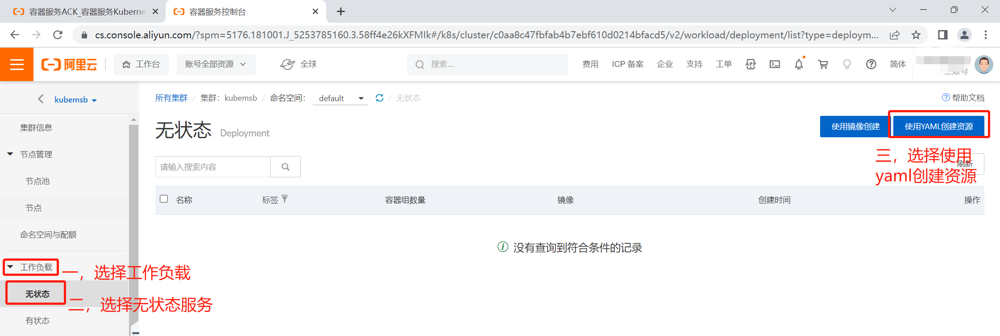
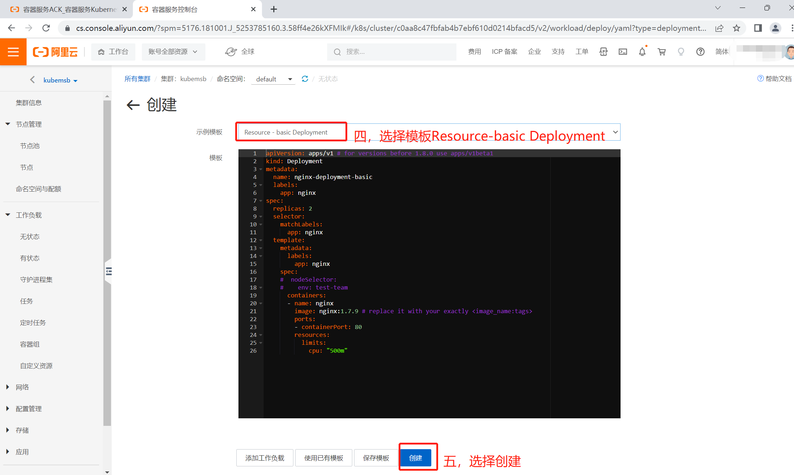
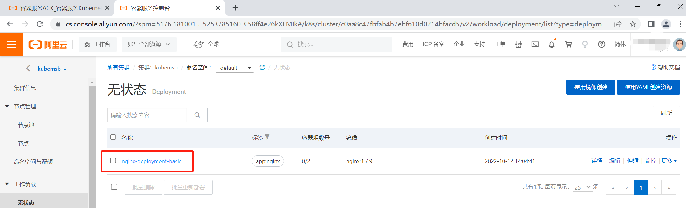
3.2创建Service¶
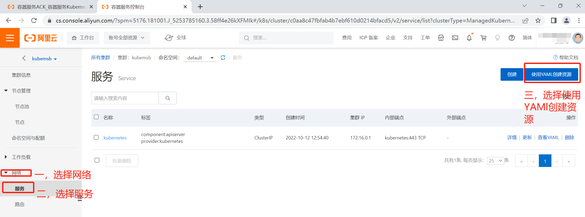
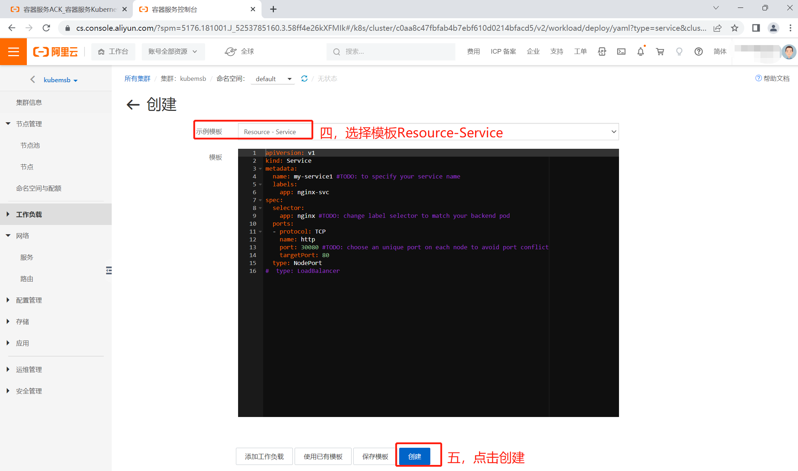
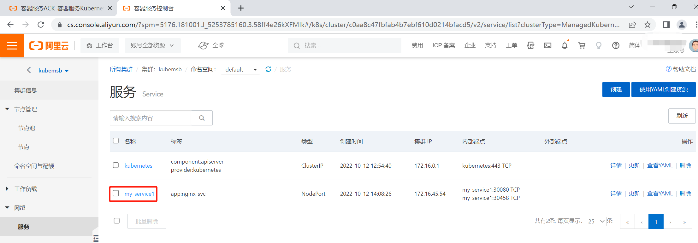
3.3创建Ingress¶
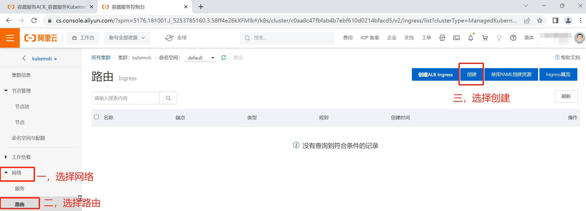
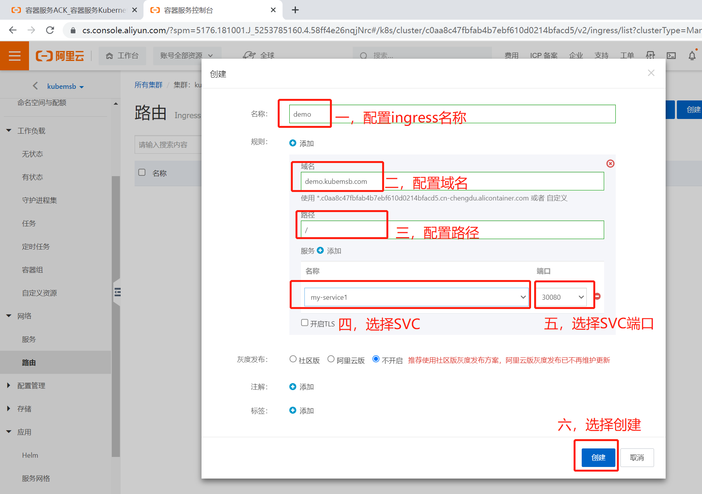

3.4本地pc添加hosts(ingress域名未做备案)¶
同时按住win键+R键进入运行


3.5访问应用¶

四、通过api连接集群，并使用阿里云容器镜像仓库服务进行应用发布¶
4.1 安装kubectl¶
[root@kubemsb ~]# curl -LO "https://dl.k8s.io/release/$(curl -L -s https://dl.k8s.io/release/stable.txt)/bin/linux/amd64/kubectl"
[root@kubemsb ~]# chmod +x kubectl
[root@kubemsb ~]# install -o root -g root -m 0755 kubectl /usr/local/bin/kubectl
[root@kubemsb ~]# kubectl version
WARNING: This version information is deprecated and will be replaced with the output from kubectl version --short. Use --output=yaml|json to get the full version.
Client Version: version.Info{Major:"1", Minor:"25", GitVersion:"v1.25.2", GitCommit:"5835544ca568b757a8ecae5c153f317e5736700e", GitTreeState:"clean", BuildDate:"2022-09-21T14:33:49Z", GoVersion:"go1.19.1", Compiler:"gc", Platform:"linux/amd64"}
Kustomize Version: v4.5.7
Server Version: version.Info{Major:"1", Minor:"24+", GitVersion:"v1.24.6-aliyun.1", GitCommit:"6965b276168c8f1e4a8545c52152838a2f433758", GitTreeState:"clean", BuildDate:"2022-09-22T08:06:05Z", GoVersion:"go1.18.6", Compiler:"gc", Platform:"linux/amd64"}
4.2 下载kubeConfig文件¶


[root@kubemsb ~]# mkdir /root/.kube
[root@kubemsb ~]# vim /root/.kube/config
apiVersion: v1
clusters:
- cluster:
server: https://你的集群ip:6443
certificate-authority-data: LS0tLS1CRUdJTiBDRVJUSUZJQ0FURS0tLS0tCk1JSURUakNDQWphZ0F3SUJBZ0lVWUJSR041Nm5lY3g4aDVLaVhCOUNnVFhUelJjd0RRWUpLb1pJaHZjTkFRRUwKQlFBd1BqRW5NQThHQTFVRUNoTUlhR0Z1WjNwb2IzVXdGQVlEVlFRS0V3MWhiR2xpWVdKaElHTnNiM1ZrTVJNdwpFUVlEVlFRREV3cHJkV0psY201bGRHVnpNQ0FYRFRJeU1UQXhNakEwTkRrd01Gb1lEekl3TlRJeE1EQTBNRFEwCk9UQXdXakErTVNjd0R3WURWUVFLRXdob1lXNW5lbWh2ZFRBVUJnTlZCQW9URFdGc2FXSmhZbUVnWTJ4dmRXUXgKRXpBUkJnTlZCQU1UQ210MVltVnlibVYwWlhNd2dnRWlNQTBHQ1NxR1NJYjNEUUVCQVFVQUE0SUJEd0F3Z2dFSwpBb0lCQVFDbU82S0JQeFR2RGwwQnprdDI1K3hEMENwc3pSR0dpamllWnlWcnErUkxZd0JuN2duODNlRmtVYzJ3ClMzU091QWtjRCsvR3IrSExveTduZVVEbWJvVmZWUG82eEFDZ1A1dGgvVll4bU1GeVVIdytDQ3E1NmxPU1BGMysKQkJXMVRndnNzR25ZaTBhZXJXU211a05jS3lBMkRZTEVmRkw4R3FJRVZxWU1DTjNvcUJvUm5hZUEwSzViU2RFRApTV0JhN0ZtNmlXTlFwMldKUlhhS3Rad2thbzB0QU50NjU1ODBteTdPK3ZhV3E1b3owTXpPcS9jV211eFFvUnBGCmJhOUVSaU9qWFM0bDhsUzFGL010bjQ1bGFiZCtFMjh6R1h6alQzQytwU0FlWTdWLzZsd2tyN0RhdklMSkNSZ0EKMkpRdlZaV3ZRRTJQQWl6RXhMNDZKdHRzemtuYkFnTUJBQUdqUWpCQU1BNEdBMVVkRHdFQi93UUVBd0lDckRBUApCZ05WSFJNQkFmOEVCVEFEQVFIL01CMEdBMVVkRGdRV0JCUlhEL2hHbkFHd0hiZ0J5MXRHU1dGVENhY3NWREFOCkJna3Foa2lHOXcwQkFRc0ZBQU9DQVFFQWZOeFRTbnpwSWFhbVROazBvZW5iQ0pqRyszTCtQMklzTnFPMzdBZkwKVmVlbWdQOWlVYlgxazhqMzFOTDMxU3VOMVFNcmlJeXpBR3hENUgvYnJvQnREWFJ3cFd6S1BQcmw3cnlNNHZsRgp2TkZpZXhFUlB5L1VZNFRnZHVIRlNtY2JETnVpV2xFRVpyd00zMDV2U2VvOGI0WDFtWWpGWHM1aTBDY3ZwOWRmCnZibEFFcFZBV2x3NDZjM0R4UTc2RFFjR1RhUENWTjdPSXBONkRySnc5OE5jRzBkK1B2QnREclZxcGY0TGpuVHgKbEdyMkxBUGN5TVoyMzBuMngvS1h3KzZvc3M0RXo5R2FKajBDdTNhWWRmekgrOGszajZPQWNMVGMvaXJwN3R3RQovekJtMmhqUEpVT085Z0JSbzMwWUxDYnpBeDRiejRTZnlsUlJ6QVJzcCsxOGxRPT0KLS0tLS1FTkQgQ0VSVElGSUNBVEUtLS0tLQo=
name: kubernetes
contexts:
- context:
cluster: kubernetes
user: "kubernetes-admin"
name: kubernetes-admin-c0aa8c47fbfab4b7ebf610d0214bfacd5
current-context: kubernetes-admin-c0aa8c47fbfab4b7ebf610d0214bfacd5
kind: Config
preferences: {}
users:
- name: "kubernetes-admin"
user:
client-certificate-data: LS0tLS1CRUdJTiBDRVJUSUZJQ0FURS0tLS0tCk1JSUQvRENDQXVTZ0F3SUJBZ0lEZUJIRE1BMEdDU3FHU0liM0RRRUJDd1VBTUdveEtqQW9CZ05WQkFvVElXTXcKWVdFNFl6UTNabUptWVdJMFlqZGxZbVkyTVRCa01ESXhOR0ptWVdOa05URVFNQTRHQTFVRUN4TUhaR1ZtWVhWcwpkREVxTUNnR0ExVUVBeE1oWXpCaFlUaGpORGRtWW1aaFlqUmlOMlZpWmpZeE1HUXdNakUwWW1aaFkyUTFNQjRYCkRUSXlNVEF4TWpBME5EZ3dNRm9YRFRJMU1UQXhNVEEwTlRNMU9Wb3dTREVWTUJNR0ExVUVDaE1NYzNsemRHVnQKT25WelpYSnpNUWt3QndZRFZRUUxFd0F4SkRBaUJnTlZCQU1UR3pFNE9UazJPRGd4TXpJME5EQTROVEV0TVRZMgpOVFUxTURRek9UQ0NBU0l3RFFZSktvWklodmNOQVFFQkJRQURnZ0VQQURDQ0FRb0NnZ0VCQUwvRjFmQ0VZc1FVCmJtODJsYUM3dlNiUTl3WHdNcEJ1ZDQ2ek1PTGtVMU5GcEF3OERUSmw5RGoyZlRFeFZFeGkrT1VFaDBzN0dncysKcitMamlmVVhQT0pRTGxUUGZTdU1iaFdtNmloc3Y1dGlFakg0bXJzRGYwUlpCc2RqMG9oOUVlbDdZT0NTKytuZwpHZFZqNDlIbzBtWUhjRXQ1Z0g4dzQ2UEQwcjBRQi9vVE52SWJFejNMVGpZZEY1ZEYyZG9QcXVKSjFTUDNvODliCmlZR2k0Z2xhL1g2dzVzOWg2TmlNNWhqNGdudHRLeisyNTNsOU4zbEdYWm9xWEVUdW5qS2RYQzlFeThBbklwYW8KVUR4NXlwb0ZqbWc4dTdNWUVBTW9sM0E3c0o4MjFzWUlnMmpsb0FIVGtZZThFNGtDOGRBZnpVaWpuNlRFNVlqTwpMUXZFKzJ0b1RFVUNBd0VBQWFPQnpEQ0J5VEFPQmdOVkhROEJBZjhFQkFNQ0I0QXdFd1lEVlIwbEJBd3dDZ1lJCkt3WUJCUVVIQXdJd0RBWURWUjBUQVFIL0JBSXdBREFmQmdOVkhTTUVHREFXZ0JRYks4NTBMcE9aREtoYnpKelIKN0ZSbVAwclhZVEE4QmdnckJnRUZCUWNCQVFRd01DNHdMQVlJS3dZQkJRVUhNQUdHSUdoMGRIQTZMeTlqWlhKMApjeTVoWTNNdVlXeHBlWFZ1TG1OdmJTOXZZM053TURVR0ExVWRId1F1TUN3d0txQW9vQ2FHSkdoMGRIQTZMeTlqClpYSjBjeTVoWTNNdVlXeHBlWFZ1TG1OdmJTOXliMjkwTG1OeWJEQU5CZ2txaGtpRzl3MEJBUXNGQUFPQ0FRRUEKRW5jWXN1TXNTTGpHZkRMcmJibXg5enhIYmFQcjN5NVVqc3ZjbkFCbDh2Rlh1ZEIzdmtNMFRrWjl6bmZEMFoybAowY2tDRVNkM0FLamV1Zy9XamVaNnp0dWpQNyttMDJiaDU5K3A0V25JRTMxZm43eDVuNmdLVXd0d0hQRUpWdGU1CnptK0QzamxSTXRQWUp0dXpNelBHKzQ2YTdnbWRYVnB1NHdmY0JDNytOOUdRZlVSV28razBQeVU5QXM5YVVrUjcKd1M4RkFydDNQZTRrRkM3SS8wdmptRXVYOGVLMENFWW1KNGdPVWhRSk1OTmRDWEVGaGVFNDdETnhQR0RRTlMrcgp5TW5ibkJNWDJrbUd4WUdLWkxlU3RTbENjMFBXTU1QNWF4b2hwVmphQnRHenJwZG9wQkpmQ1BxSWtua1pnMlJFCm1oUGNjR0pNZk03OHorbUVnWTdQQlE9PQotLS0tLUVORCBDRVJUSUZJQ0FURS0tLS0tCg==
client-key-data: LS0tLS1CRUdJTiBSU0EgUFJJVkFURSBLRVktLS0tLQpNSUlFb3dJQkFBS0NBUUVBdjhYVjhJUml4QlJ1YnphVm9MdTlKdEQzQmZBeWtHNTNqck13NHVSVFUwV2tERHdOCk1tWDBPUFo5TVRGVVRHTDQ1UVNIU3pzYUN6NnY0dU9KOVJjODRsQXVWTTk5SzR4dUZhYnFLR3kvbTJJU01maWEKdXdOL1JGa0d4MlBTaUgwUjZYdGc0Skw3NmVBWjFXUGowZWpTWmdkd1MzbUFmekRqbzhQU3ZSQUgraE0yOGhzVApQY3RPTmgwWGwwWFoyZytxNGtuVkkvZWp6MXVKZ2FMaUNWcjlmckRtejJIbzJJem1HUGlDZTIwclA3Ym5lWDAzCmVVWmRtaXBjUk82ZU1wMWNMMFRMd0NjaWxxaFFQSG5LbWdXT2FEeTdzeGdRQXlpWGNEdXduemJXeGdpRGFPV2cKQWRPUmg3d1RpUUx4MEIvTlNLT2ZwTVRsaU00dEM4VDdhMmhNUlFJREFRQUJBb0lCQUVIQnpJSVVZdWxwT0JUYQpXcVFxdThrN2pmaHpUR05KL2FUb3ZMS1FLQ0k5bHVxN0RLdGpXa0xPQWsrRDRxdnVvL21qZStESCt6NHYySStzCkJmb01aY3dVUWs3Q2R1RWYzZjkrcEh3SURndHhyVnVGSzBsRkFiYWw4RFVlZldwZnVHeWU2YkVYdFZtVWhrY3QKWVVqdzFIUTN5TUdZZi84Yy9IR0REQmZZRDJRbjZhTDFWQXJIMU1RanM2QUhsdTBqNmlScmtiZStJQTJmaEhCWgo3SWxNMm1mMWFUQ2UxTFh5VlFLY2lab3FEdG9EaHlGVzlJeFNBRWgyWDJCeHN2aStjbXFFRnMrYVpsQjlOYmVrCmNiaWJNby9BbFBKL0Q5dlUvd2dvOG83eFJKVUVwN0JjNXptQkd1Vk9mOXQyL1FRTHRYMnF3Ym5NbTJ2L09vSmkKcmdDTkt3RUNnWUVBeGtFZ3crelFsdGxIM1dON3FqaTV0SjZoMU54K0FIbXlOVktkMXo4TWVQQlRmWklEYnJwZwpRckk1SGViR0JkRFR3R09xWEFaVjNGMkhNKzVzTmNtRVpMUXgxUFlwUjJKNmRhTDlQcHgyUVYrWG1jcGJFM2h2CnlQdFNxK01jS2dLQTFBWXUvYUpMRUFGYzhkRzZXQSsyVll4S2dHQkoxYWZVd2FkOHNqa01lZjBDZ1lFQTk2Rm4KeG0zcWx5V0NIVVVScGZZbWxHRjcwazhoNEhHbEhQVDhKWFRPUDJ1azhJSG5IcWVHMURHWkVXTjlObGFHNlE2OApwT21kVmpGYUVaRkhsaUgrM2EycjM5ODJZbE0zV2ptdHAwWU1OamRjb0VkNVB2SmhBcDVnanJjanFEbitCRVJRCkhJTlloTHVVTkhldkgybTcxanBMZFc0T3U4RDBtemcwYWZmKzZla0NnWUFqSEsvSDQyNUIrVE9BSXpsb3VXa3kKY3hIb1dEQzh0dEQ0SHF5enpZZlE5NGRoNnZWT3JCV1dXbWhCUW5qNTJMVllFbzYrZzZTN1JabEhla2VSOHlITwprQmR2UnpXaVhlK2dYQUNNRVR2a2NpQ3diU1ZhT205WjRpRVBMa2J6cmNQUlNWTVRPcVllckk4Z2lPdCs0ekdBCnp6cjJwNWNNRHhCZ1IrQ08xQW5BcFFLQmdRQzVidEI3TXd3Y3F5WElMVlNONXNuMUN4cmgzZ2dNUG8zYUpVbzcKOGtBUUZkZXBrbDAwQTFkZnh0Uk14U2VhYlNrUmxNdUc0cm5ETmFtd3hnM0pTeVBEZEsza013NVNpdVpFVmpUSApzaGlxOE1JWDgrM0RTVldEMUgyUjRXcCtLdzhndXRjU3d2aWlUS1VxdFFVYWpON3dDUzlBZkcza0F4WW90ZW5xCkFKK1BJUUtCZ0MxRGFJdS9wWnVNa0FJTUpUZzdKUFZrVVlpMmZ6RkxqSTFQYS9qdWo4NGJ0TCtvRi9BdmZPblkKK1AvTjhHUWJ5UnNqc1owc2JzTzZvWUZrUVd4dlhWY1Y5a3NVNks5ZFpRUkNoSktrM0gxUzFvQ2xnclk2YkViKwowNFpKZlM0bWR0QzVvVVkydVNBdzEyOTI4MUpXdG9XdE5QaHRUeWlDV2xVclRNbDZQZ3R3Ci0tLS0tRU5EIFJTQSBQUklWQVRFIEtFWS0tLS0tCg==
4.3 查看集群信息¶
[root@kubemsb ~]# kubectl get nodes --kubeconfig /root/.kube/config
NAME STATUS ROLES AGE VERSION
cn-chengdu.192.168.10.43 Ready <none> 3h37m v1.24.6-aliyun.1
cn-chengdu.192.168.10.44 Ready <none> 3h37m v1.24.6-aliyun.1
cn-chengdu.192.168.10.45 Ready <none> 3h37m v1.24.6-aliyun.1
4.4 创建阿里云容器镜像服务¶


4.5 安装docker¶
[root@kubemsb ~]# wget -O /etc/yum.repos.d/docker-ce.repo https://mirrors.aliyun.com/docker-ce/linux/centos/docker-ce.repo
[root@kubemsb ~]# yum -y install docker-ce
[root@kubemsb ~]# systemctl enable docker
[root@kubemsb ~]# systemctl start docker
4.6 上传镜像至服务器¶
将资源目录下的“apidemo.tar上传至服务器”
4.7 导入镜像¶
[root@kubemsb ~]# docker load -i apidemo.tar
[root@kubemsb ~]# docker images
REPOSITORY TAG IMAGE ID CREATED SIZE
apidemo v1 cae07723a2c3 7 minutes ago 15.5MB
4.8 登录镜像仓库¶
[root@kubemsb ~]# docker login --username=你的用户名 registry.cn-chengdu.aliyuncs.com
4.9 上传镜像至阿里云镜像仓库¶
[root@kubemsb ~]# docker tag apidemo:v1 registry.cn-chengdu.aliyuncs.com/kubemsb/apidemo:v1
[root@kubemsb ~]# docker push registry.cn-chengdu.aliyuncs.com/kubemsb/apidemo:v1
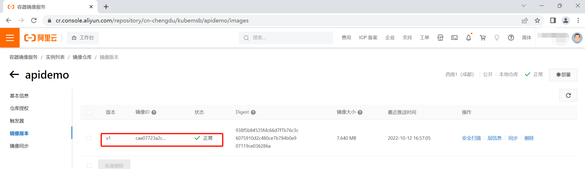
4.10在阿里云控制台部署项目¶
4.10.1 部署apidemo_Deployment¶
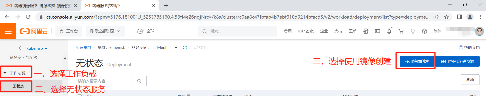
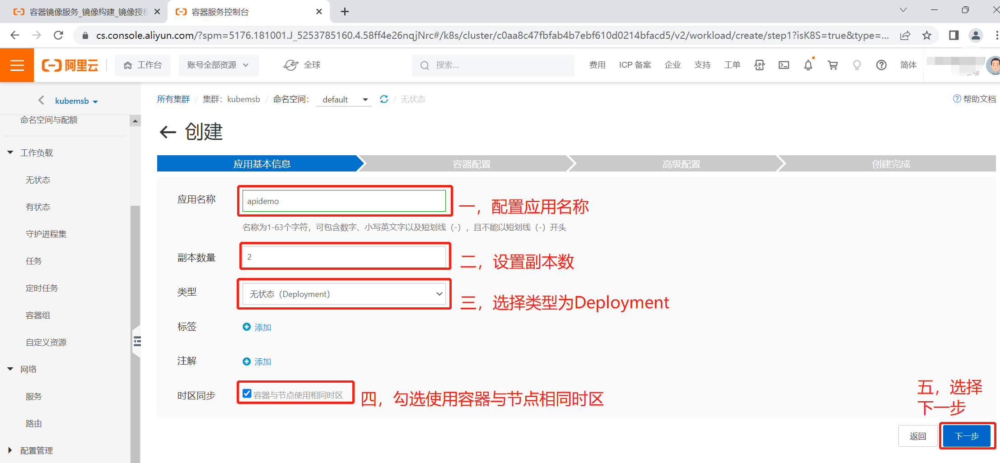
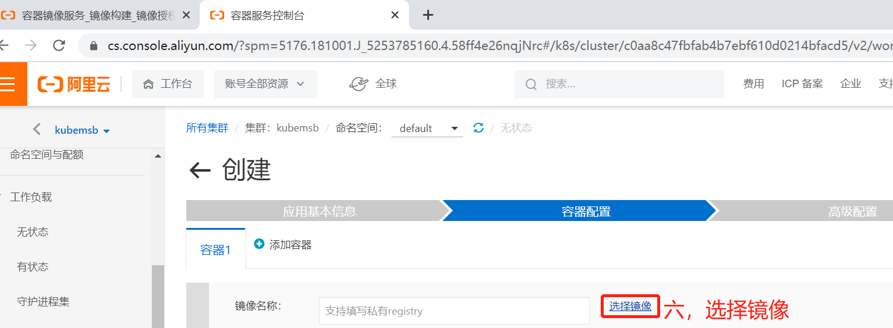
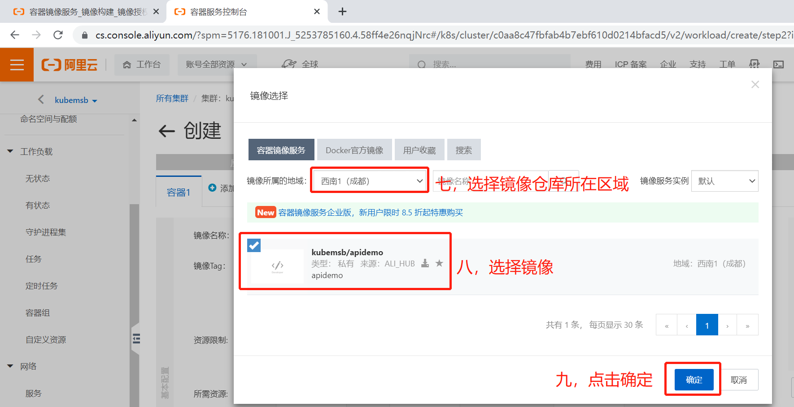
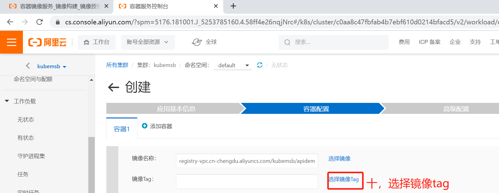
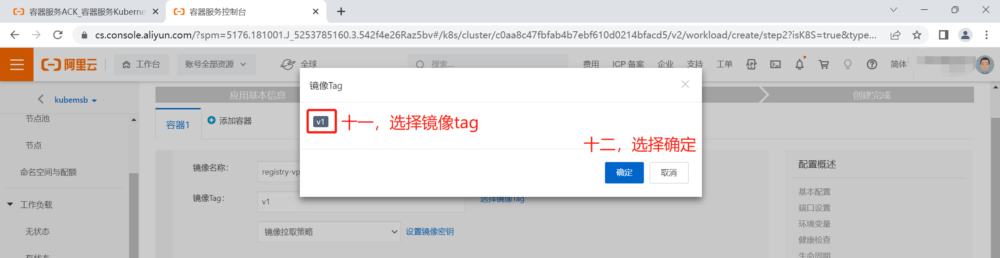
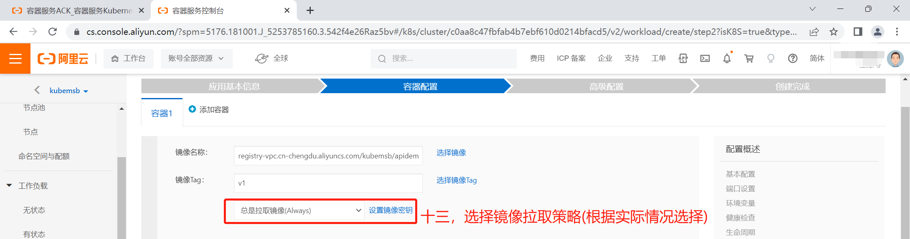
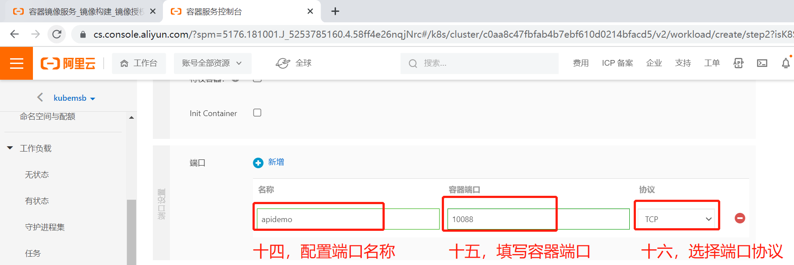
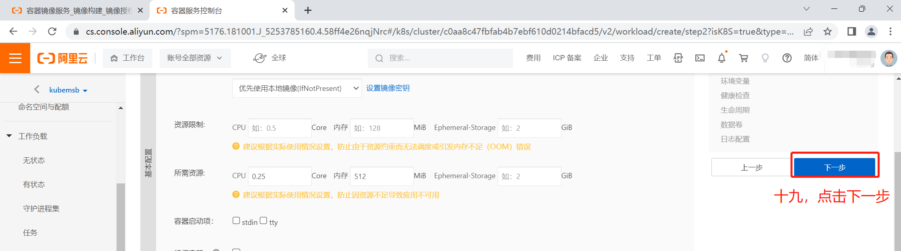
4.10.2 部署apidemo_SVC¶
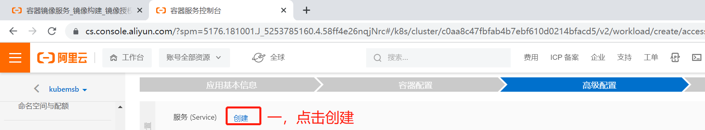
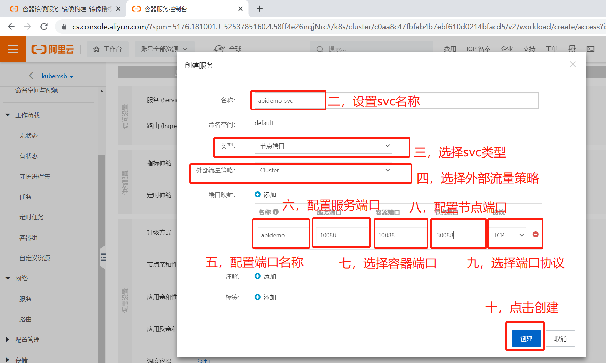
4.10.3 部署apidemo_ingress¶
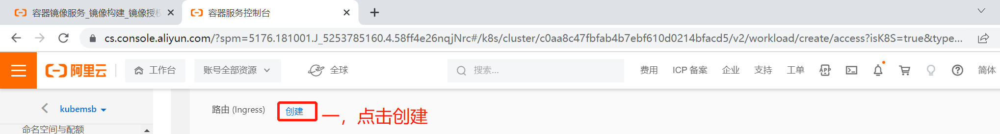
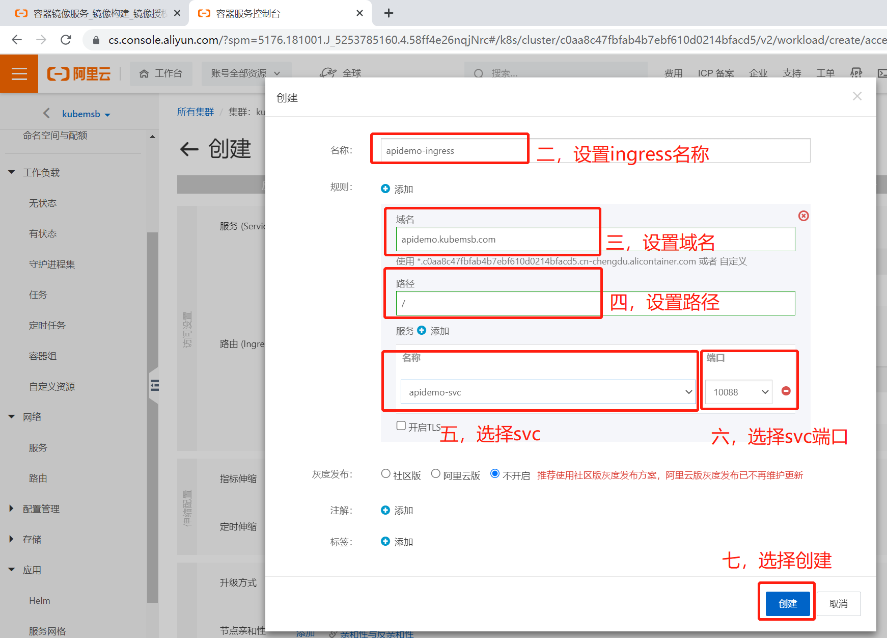
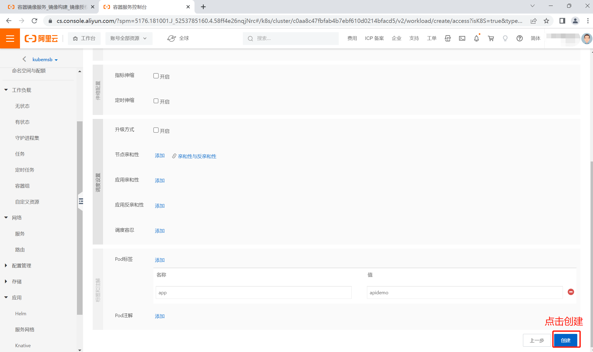
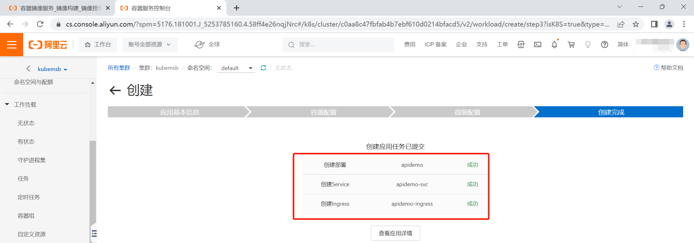
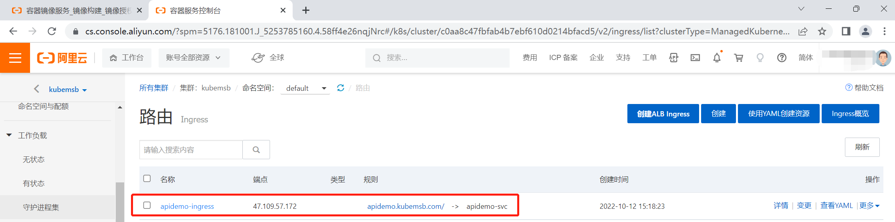
4.11 访问apidemo服务¶
4.11.1 pc添加hosts¶


4.11.2 访问apidemo服务¶
浏览器访问apidemo.kubemsb.com/info
返回如下信息则证明服务部署成功
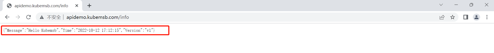